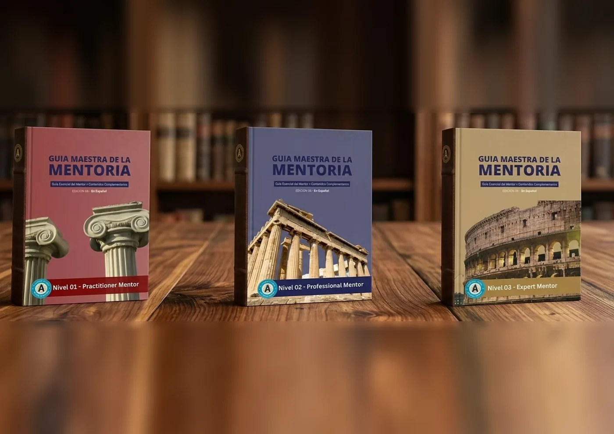
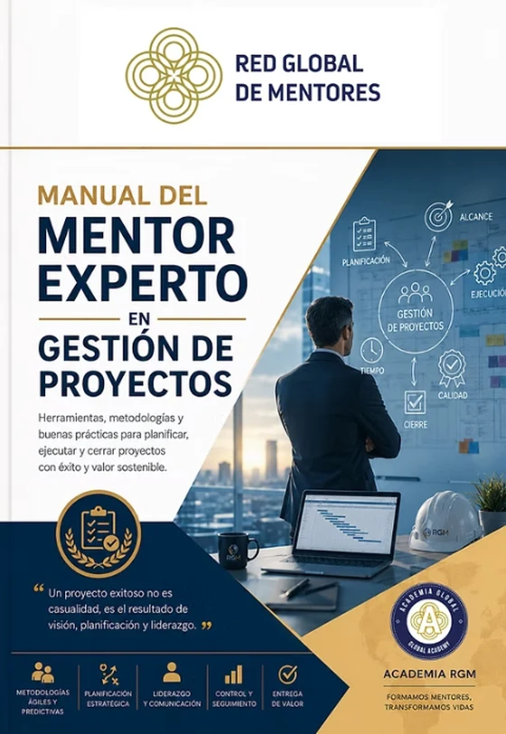
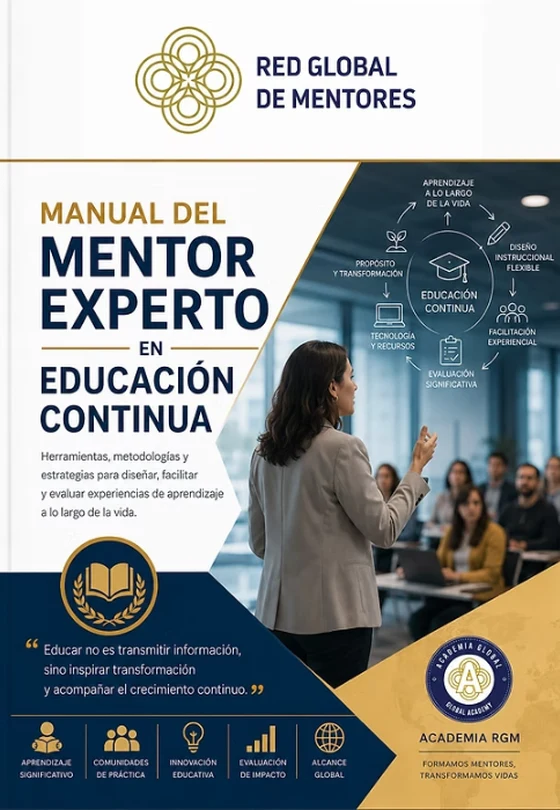

Guía Integral de Disciplinas
El mapa del ecosistema. Clarifica las diferencias y complementariedades entre la mentoría, el coaching, la terapia y otras prácticas. Define límites, evita confusiones y eleva el marco ético del acompañamiento.
Una tríada especial para profesionales de otras disciplinas.
Una formación intensiva diseñada para profesionales de disciplinas afines que buscan integrar la mentoría con excelencia y estándar internacional.
El mapa del ecosistema. Clarifica las diferencias y complementariedades entre la mentoría, el coaching, la terapia y otras prácticas. Define límites, evita confusiones y eleva el marco ético del acompañamiento.
La puerta de entrada rápida. Expone de forma directa y práctica los conceptos centrales, competencias y pilares exclusivos de la mentoría, permitiendo una adopción e integración inmediata a la práctica profesional.
La estructuración de la práctica. Transforma el acompañamiento empírico en una disciplina formal, ética y certificable mediante procesos claros, transferencia de criterio y supervisión profesional.

Un manual especial para universidades.
La Guía Maestra de la Mentoría, editada por la Academia RGM, es la obra de referencia internacional para comprender y ejercer la mentoría con rigor, ética y estándar profesional. Integra los fundamentos de la disciplina con herramientas aplicadas, modelos metodológicos y marcos conceptuales que ordenan y consolidan la práctica mentoral.
Estructura académica. La obra está integrada por 3 tomos (Nivel 01, Nivel 02 y Nivel 03), diseñados para acompañar el desarrollo del Programa Académico para Universidades de la Academia RGM en sus distintos niveles de formación y certificación.

Un recorrido por la historia, el presente y la práctica profesional.
Esta tríada de Guías de la Mentoría constituye un cuerpo bibliográfico coherente y fundacional, diseñado para comprender la mentoría en su verdadera naturaleza, sin confundirla ni diluirla entre otras disciplinas del acompañamiento humano.
A través de sus tres tomos, la obra prepara a la persona para entender qué es la mentoría antes de intentar ejercerla, situándola no como una técnica profesional, sino como una experiencia humana consciente, anterior a cualquier rol, certificación o método.
Es el soporte bibliográfico central del Programa Intermedio de la Mentoría, y ha sido concebida como una arquitectura conceptual sólida, transversal y escalable, capaz de dar fundamento a futuras formaciones, especializaciones y nuevas tríadas temáticas.

Guías para la acción de la mentoría: la tríada funcional de la mentoría consciente.
Esta tríada está concebida para mentores en ejercicio que buscan evolucionar continuamente su práctica. En el acompañamiento humano, las buenas intenciones y la acumulación de herramientas son insuficientes; lo que distingue a un verdadero profesional es el criterio para determinar cuándo, cómo y desde qué rol intervenir.
La serie Mentoría en Acción nace para dar respuesta a esta exigencia. Más que una colección de técnicas o un manual de fórmulas, constituye una arquitectura formativa orientada a la maduración real del mentor: un recorrido integral que articula criterio, acción y reflexión, las tres dimensiones inseparables de la práctica consciente.
Es la lectura previa fundamental antes de profundizar en los Manuales de Nicho: sienta las bases metodológicas que todo mentor experto debe dominar para ejercer con estándar y excelencia.

Los tres últimos títulos editados por la Academia Global y la Editorial RGM.
Esta tríada constituye la lectura previa fundamental antes de profundizar en los Manuales de Nicho. Sus contenidos sientan las bases metodológicas que todo mentor experto debe dominar para ejercer con estándar y excelencia.

Nuestra colección de Manuales Funcionales reúne guías estratégicas con modelos, herramientas y prácticas profesionales diseñadas para diferentes nichos de mercado. Estas guías le brindan al mentor todos los criterios necesarios para ejercer su práctica profesional con los más altos estándares.
Tendremos 12 manuales de especialización. Ya están editados los cuatro que se ven abajo, y vendrán muchos más.
Acceda a gran parte de los Manuales Funcionales de forma gratuita adquiriendo esta membresía.



